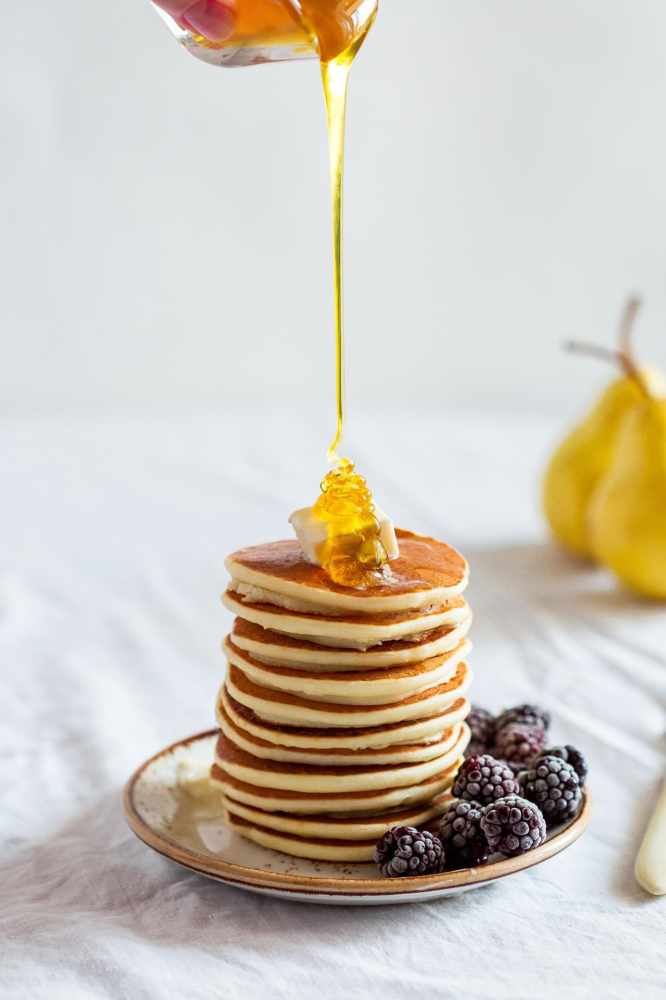

Pannkakor Recept

Ingredienser
Ingredienserna som behövs är:
- Vetemjöl 6 dl
- Mellanmjölk 12 dl
- Ägg 6st
- Salt 1 tsk
- Arlas smör- & rappsolja 6msk
Instruktioner
- Vispa ut mjölet i hälften av mjölken till en slät smet. Vispa i resterande mjölk, ägg och salt.
- Låt pannkakssmeten svälla ca 10 min så håller pannkakorna håller ihop bättre.
- Hetta upp smör- & rapsolja i en stekpanna. Värm först upp pannan på hög värme så pannan blir riktigt varm. Häll ner smet och stek tunna fina pannakor. Vänd pannkakan när den stelnat, lossnat i kanterna och fått stekyta.
- Tillsätt lite mer smör- & rapsolja till stekpannan med jämna mellanrum. I en gjutjärnspanna går det åt mycket fett. I en non stick-panna räcker det med nytt fett till varje tredje pannkaka.
Om ni gillade detta recept så hittar ni mer information om mig här!